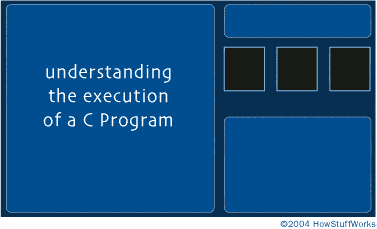

Welcome to the course website of C and Data Structures!
C and Data Structures (CnDS), is a basic and introductory course in programming. The main objective of this course is to expose the students to programming and basic data structures concepts and explore the endless possibilities of programming and problem solving.
This course website is as a one-stop-resource for students with detailed explaination of all the topics of CnDS as per JNTU Syllabus including assignments, practice programs, additional resources etc. The website will be updated from time-to-time as per the syllabus completion. A separate glossary of all the new terminology will also be maintained. The exams and results information will also be updated from time to time.
C and Data Structures Course
How a C program works?
